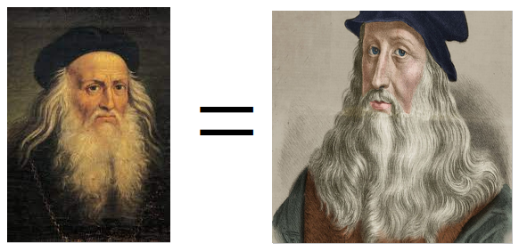

{% extends "index.html" %}
{% block title %} Home {% endblock %}
{% block content %}

Quick & Easy Process
Check if two faces refers to the same person. We compare two faces and determine if they belong to the same person by giving a corresponding True/False value.